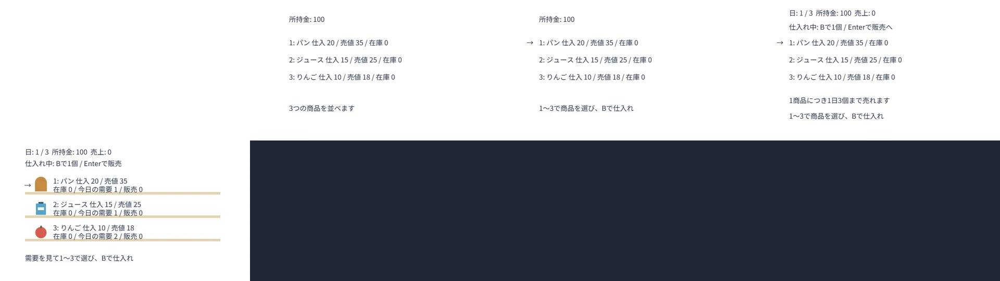
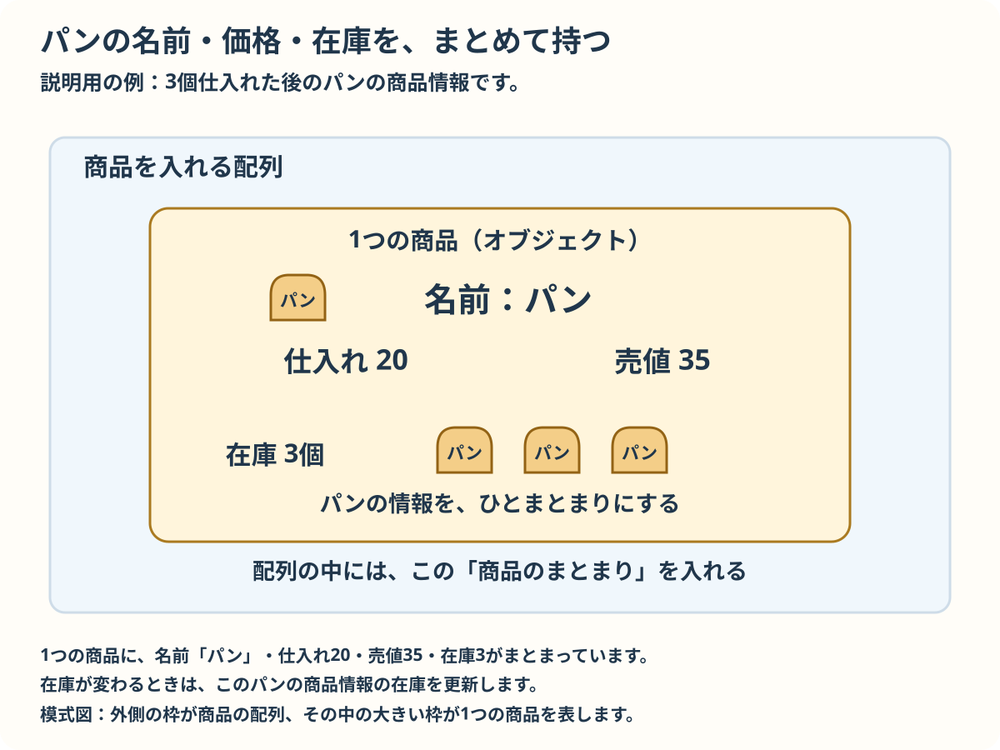
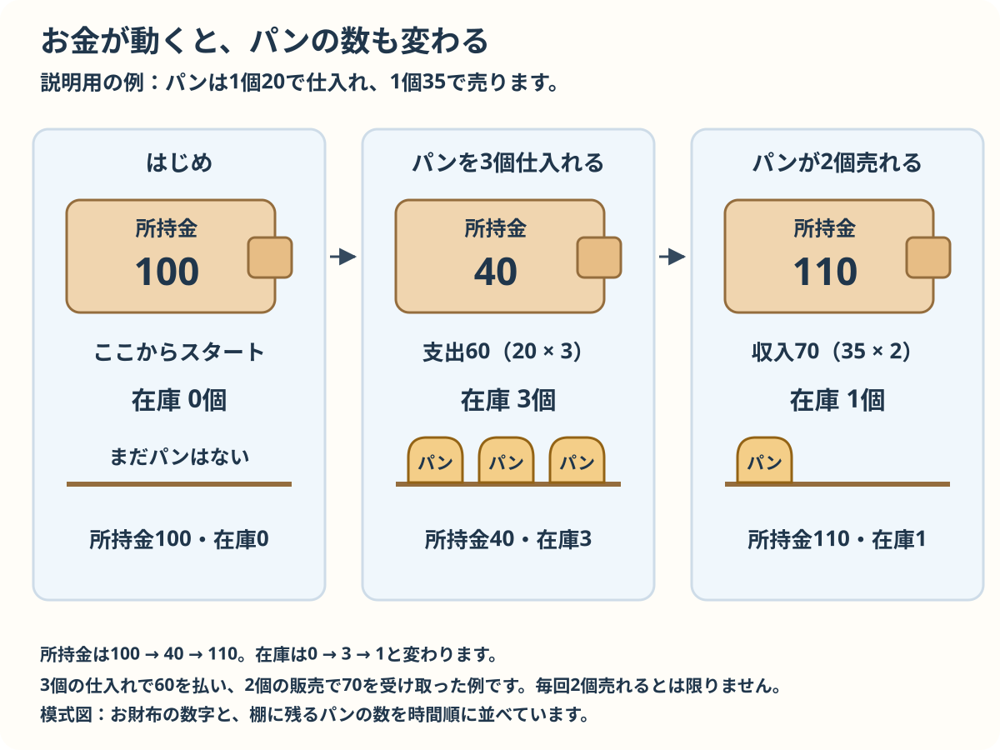

小さなお店の経営ゲーム
中級者向け
3日間、今日の需要と予算を見て仕入れます。販売へ進むと、需要と在庫の少ない数だけ自動で売れます。最終日の所持金160以上を目指します。
始める前に
ZIPを展開してできたフォルダーでindex.htmlを開きます。ZIPにはひな型の3ファイルが入っています。
WindowsでZIPを展開する（動画）
3つのファイルは同じフォルダーに入っています。
各ステップでは作業用の script.js を開き、示した部分を順番に置き換えます。index.html と style.css は変更しません。保存後、作業用の index.html を開くか再読み込みします。
document.querySelector("#game-canvas") はHTMLのCanvasを選び、getContext("2d") で絵を描く道具を取り出します。start() は最初の設定、update() は更新、draw() は描画です。gameLoop() は requestAnimationFrame で更新と描画を繰り返します。
ステップ 1：商品を並べる
このステップの見本を図で見る
products[i].cost を読む
1個仕入れるとこの金額を払う
products[i].price を読む
1個売れるとこの金額を受け取る。開始時の所持金100
ゲーム画面とコードの前後を見る

このステップの見本
この行を足す前 変わったコードの一例（script.js）
const line = (i + 1) + ": " + item.name + " 仕入 " + item.cost + " / 売値 " + item.price + " / 在庫 " + item.stock;
見本で確かめること
パン、ジュース、りんごの値段と所持金100が表示されます。
保存してゲーム画面を更新する（動画）
index.html を再読み込みします。目標
3商品の仕入れ値、売値、在庫と所持金を表示します。
確認欄までは準備中です。作業を順に進め、確認欄で保存して動作を確かめます。
書く場所と置き換えるコード
商品と所持金を覚える
作業用フォルダーの script.js で、次の目印を探し、その直後に書きます。
目印
const ctx = canvas.getContext("2d");
書き足すコード
let products, money;
変数は値に名前を付けて覚えるものです。products は商品の配列、money は所持金です。
商品と所持金を用意する
作業用フォルダーの script.js で、次の目印を探し、その直後に書きます。
目印
function start() {
書き足すコード
products = [
{name: "パン", cost: 20, price: 35, stock: 0, soldToday: 0},
{name: "ジュース", cost: 15, price: 25, stock: 0, soldToday: 0},
{name: "りんご", cost: 10, price: 18, stock: 0, soldToday: 0}
];
money = 100;
= は右の値を左に入れ、; は文の区切りです。各商品には名前、仕入れ値、売値、在庫、今日売った数を記録します。最初の所持金は100です。

パンという1つの商品に、名前・仕入れ値・売値・在庫をまとめます。この例では、仕入れ20、売値35、在庫3です。商品の配列には、このような商品のまとまりを入れます。パンが売れたら、パンのまとまりの中の在庫を更新します。
図は3個仕入れた後の例です。コードの products は商品を並べ、パンの name、cost、price、stock と soldToday をまとめます。
商品と所持金を描く
作業用フォルダーの script.js で、次の目印を探し、その直後に書きます。
目印
ctx.clearRect(0, 0, canvas.width, canvas.height);
書き足すコード
ctx.fillStyle = "#26334a";
ctx.font = "22px sans-serif";
for (let i = 0; i < products.length; i++) {
const item = products[i];
const line = (i + 1) + ": " + item.name + " 仕入 " + item.cost + " / 売値 " + item.price + " / 在庫 " + item.stock;
ctx.fillText(line, 125, 145 + i * 55);
}
ctx.fillText("所持金: " + money, 125, 70);
ctx.fillText("3つの商品を並べます", 125, 355);
ctx はひな型の描画の道具です。fillStyle は色、font は文字の大きさと書体です。for で商品を順に読み、縦位置を55ずつずらします。
保存後の確かめ方
パン、ジュース、りんごの値段と所持金100が表示されます。 ステップ 1 の見本を開く
小さな練習
商品の名前や値段を一時的に変えて表示を確かめます。 練習後はこのステップのコードに戻してください。
ステップ 2：商品を仕入れる
このステップの見本を図で見る
100 - 20 × 1 = 80、在庫0 + 1
パンが1個、所持金80
100 - 20 × 3 = 40、在庫0 + 3
パンが3個、所持金40
0 >= 20 は false
5個でお金が0。6個目は仕入れられない
ゲーム画面とコードの前後を見る
このステップの見本
ctx.fillText("3つの商品を並べます", 125, 355);
変わったコードの一例（script.js）ctx.fillText("→", 85, 145 + selected * 55);
見本で確かめること
パンを3個仕入れると所持金40、在庫3になります。
目標
1〜3で商品を選び、Bで1個ずつ仕入れます。
確認欄までは準備中です。作業を順に進め、確認欄で保存して動作を確かめます。
書く場所と置き換えるコード
選択とメッセージを覚える
作業用フォルダーの script.js で、次の範囲を探して置き換えます。
置き換える範囲
let products, money;
置き換えるコード
let products, money, selected, message;
selected は選んだ商品番号、message は案内です。
最初の商品を選ぶ
作業用フォルダーの script.js で、次の目印を探し、その直後に書きます。
目印
money = 100;
書き足すコード
selected = 0;
message = "1〜3で商品を選び、Bで仕入れ";
配列の0番を選び、商品選択と仕入れの案内を入れます。
選択中の商品と案内を表示する
作業用フォルダーの script.js で、次の範囲を探して置き換えます。
置き換える範囲
ctx.fillText("3つの商品を並べます", 125, 355);
置き換えるコード
ctx.fillText("→", 85, 145 + selected * 55);
ctx.fillText(message, 125, 355);
選択番号に応じた高さに矢印を描き、message を表示します。
キーを受け取る準備をする
作業用フォルダーの script.js で、次の目印を探し、その直前に書きます。
目印
function gameLoop()書き足すコード
window.addEventListener("keydown", (event) => {
});
keydown はキーが押されたときに起きます。
特別な入力を除く
作業用フォルダーの script.js で、次の目印を探し、その直後に書きます。
目印
window.addEventListener("keydown", (event) => {
書き足すコード
if (event.repeat || event.ctrlKey || event.altKey || event.metaKey || event.isComposing) return;
押しっぱなしや修飾キーとの組み合わせ、変換中は return で処理を終えます。
数字キーで商品を選ぶ
作業用フォルダーの script.js で、次の目印を探し、その直後に書きます。
目印
if (event.repeat || event.ctrlKey || event.altKey || event.metaKey || event.isComposing) return;
書き足すコード
if (event.key >= "1" && event.key <= "3" && event.key.length === 1) {
selected = Number(event.key) - 1;
}
1〜3のキーを数値にして1を引き、配列番号0〜2に直します。
B キーで商品を仕入れる
作業用フォルダーの script.js のキー入力を受け取る keydown の処理で、数字キーで商品を選ぶ分岐の末尾を探します。下の最後の2行を置き換え、選択番号を入れる行は残します。
直前の行と、置き換える最後の2行
selected = Number(event.key) - 1;
}
});置き換えるコード
} else if (event.key.toLowerCase() === "b") {
const item = products[selected];
if (money >= item.cost) {
money -= item.cost;
item.stock++;
message = item.name + "を1個仕入れた";
} else {
message = "お金が足りません";
}
}
});所持金が仕入れ値以上なら、その金額を引いて在庫を1増やします。足りなければ案内を表示します。
保存後の確かめ方
パンを3個仕入れると所持金40、在庫3になります。お金が足りない仕入れはできません。 ステップ 2 の見本を開く
小さな練習
パンの仕入れ値を変え、残る所持金を計算して確かめます。 練習後はこのステップのコードに戻してください。
ステップ 3：販売と日数を加える
このステップの見本を図で見る
100 - 20 × 3 = 40
パン在庫3個
40 + 35 = 75、在庫3 - 1 = 2
パン在庫2個
75 + 35 = 110、在庫2 - 1 = 1
パン在庫1個。売上と所持金は別の数字
ゲーム画面とコードの前後を見る
このステップの見本
ctx.fillText("所持金: " + money, 125, 70);
変わったコードの一例（script.js）ctx.fillText("日: " + day + " / 3 所持金: " + money + " 売上: " + revenue, 125, 50);
見本で確かめること
パン3個を仕入れ、販売で2個売ると所持金110、在庫1です。
目標
仕入れから販売へ進み、3日後の所持金で結果を決めます。
確認欄までは準備中です。作業を順に進め、確認欄で保存して動作を確かめます。
書く場所と置き換えるコード
日付と売上、状態を覚える
作業用フォルダーの script.js で、次の範囲を探して置き換えます。
置き換える範囲
let products, money, selected, message;
置き換えるコード
let products, money, revenue, selected, message, day, phase, state;
revenue は売上、day は日付、phase は仕入れか販売か、state はゲームの状態です。
売上を初期化する
作業用フォルダーの script.js で、次の目印を探し、その直後に書きます。
目印
money = 100;
書き足すコード
revenue = 0;
売上を0から始めます。
日付と状態を初期化する
作業用フォルダーの script.js で、次の目印を探し、その直後に書きます。
目印
selected = 0;
書き足すコード
day = 1;
phase = "buy";
state = "playing";
1日目の仕入れ中、プレイ中にします。
日付と売上を表示する
作業用フォルダーの script.js で、次の範囲を探して置き換えます。
置き換える範囲
ctx.fillText("所持金: " + money, 125, 70);
置き換えるコード
ctx.fillText("日: " + day + " / 3 所持金: " + money + " 売上: " + revenue, 125, 50);
日付、所持金、売上を同じ行に表示します。
現在の操作を案内する
作業用フォルダーの script.js で、次の範囲を探して置き換えます。
置き換える範囲
ctx.fillText(message, 125, 355);
置き換えるコード
if (state === "playing") {
if (phase === "buy") {
ctx.fillText("仕入れ中: Bで1個 / Enterで販売へ", 125, 95);
} else {
ctx.fillText("販売中: Sで1個 / Enterで次の日へ", 125, 95);
}
ctx.fillText("1商品につき1日3個まで売れます", 125, 330);
} else {
ctx.fillText("R キーでもう一度", 125, 330);
}
ctx.fillText(message, 125, 380);
プレイ中は仕入れか販売に応じた操作を描き、終了後は R の案内を表示します。
終了後の操作と商品選択を整理する
作業用フォルダーの script.js で、次の範囲を探して置き換えます。
置き換える範囲
if (event.key >= "1" && event.key <= "3" && event.key.length === 1) {
selected = Number(event.key) - 1;
} else if (event.key.toLowerCase() === "b") {
置き換えるコード
const key = event.key.toLowerCase();
if (state !== "playing") {
if (key === "r") start();
return;
}
if (key >= "1" && key <= "3" && key.length === 1) {
selected = Number(key) - 1;
message = products[selected].name + "を選んだ";
} else if (key === "b" && phase === "buy") {
キーを小文字にし、終了後は R で再開します。仕入れは phase が "buy" のときだけです。
販売の処理を用意する
作業用フォルダーの script.js のキー入力を受け取る keydown の処理で、仕入れできない場合の分岐の末尾を探します。下の最後の2行を置き換え、直前の2行は残します。
直前の行と、置き換える最後の2行
message = "お金が足りません";
}
}
});置き換えるコード
} else if (key === "s" && phase === "sell") {
const item = products[selected];
}
});販売中に S を押したときの処理を加えます。
在庫と販売数を調べる
作業用フォルダーの script.js で、次の範囲を探して置き換えます。
置き換える範囲
const item = products[selected];
}
});置き換えるコード
const item = products[selected];
if (item.stock <= 0) {
message = "在庫がありません";
} else if (item.soldToday >= 3) {
message = "今日はこの商品を3個売りました";
}
}
});在庫がない場合と、1日に3個売った場合は理由を表示します。
商品を1個売る
作業用フォルダーの script.js で、次の範囲を探して置き換えます。
置き換える範囲
message = "今日はこの商品を3個売りました";
}
}
});置き換えるコード
message = "今日はこの商品を3個売りました";
} else {
item.stock--;
item.soldToday++;
money += item.price;
revenue += item.price;
message = item.name + "を1個売った";
}
}
});在庫を1減らし、販売数を1増やします。売値を所持金と売上の両方に加えます。

所持金100から、1個20のパンを3個仕入れると、60を払って所持金40・在庫3になります。そのうち2個が1個35で売れると、70を受け取ります。結果は所持金110・在庫1です。お金だけでなく、棚に残るパンの数も一緒に確かめましょう。
仕入れ中はBで1個ずつ買い、Enterで販売に進みます。販売中はSで1個ずつ売ります。
Enter で販売に切り替える
作業用フォルダーの script.js のキー入力を受け取る keydown の処理で、販売できた場合の分岐の末尾を探します。下の最後の3行を置き換え、メッセージの行は残します。
直前の行と、置き換える最後の3行
message = item.name + "を1個売った";
}
}
});置き換えるコード
}
} else if (event.key === "Enter") {
event.preventDefault();
if (phase === "buy") {
phase = "sell";
message = "Sで売ろう。売れるのは1商品3個まで";
}
}
});仕入れ中の Enter で販売に切り替えます。
3日目の結果を決める
作業用フォルダーの script.js で、次の範囲を探して置き換えます。
置き換える範囲
message = "Sで売ろう。売れるのは1商品3個まで";
}
置き換えるコード
message = "Sで売ろう。売れるのは1商品3個まで";
} else if (day === 3) {
if (money >= 160) {
state = "clear";
message = "目標達成！ 所持金 " + money;
} else {
state = "over";
message = "目標に届かなかった。所持金 " + money;
}
}
3日目の販売後に所持金160以上ならクリア、それ以外は終了です。
次の日の仕入れに進む
作業用フォルダーの script.js で、次の範囲を探して置き換えます。
置き換える範囲
message = "目標に届かなかった。所持金 " + money;
}
}
置き換えるコード
message = "目標に届かなかった。所持金 " + money;
}
} else {
day++;
phase = "buy";
for (const item of products) item.soldToday = 0;
message = "次の日。Bで仕入れよう";
}
3日目より前なら日付を1増やし、各商品の今日の販売数を0に戻します。
保存後の確かめ方
パン3個を仕入れ、販売で2個売ると所持金110、在庫1です。3日間を終え、Rで再挑戦します。 ステップ 3 の見本を開く
小さな練習
目標額160を別の数に変え、結果の表示と比べます。 練習後はこのステップのコードに戻してください。
ステップ 4：需要を見て仕入れ、自動で売る
このステップの見本を図で見る
Math.min(3, 2) = 2、40 + 2 × 35 = 110
所持金110、在庫1
Math.min(2, 3) = 2、60 + 2 × 35 = 130
2個だけ仕入れた場合、所持金は130で在庫は0
ゲーム画面とコードの前後を見る
このステップの見本
const line = (i + 1) + ": " + item.name + " 仕入 " + item.cost + " / 売値 " + item.price + " / 在庫 " + item.stock;
変わったコードの一例（script.js）const y = 120 + i * 75;
見本で確かめること
需要が2のパンを3個仕入れて販売に進むと、所持金は40から110、在庫は1になります。
目標
今日の需要を見て仕入れ、在庫と需要の少ない数だけ自動で販売します。
確認欄までは準備中です。作業を順に進め、確認欄で保存して動作を確かめます。
書く場所と置き換えるコード
その日の需要を作る
作業用フォルダーの script.js で、次の目印を探し、その直前に書きます。
目印
window.addEventListener書き足すコード
function setDemand() {
for (const item of products) {
item.demand = Math.floor(Math.random() * 3) + 1;
item.soldToday = 0;
}
}
各商品の需要を1〜3から決め、今日の販売数を0にします。
需要に応じて自動販売する
作業用フォルダーの script.js で、次の目印を探し、その直前に書きます。
目印
window.addEventListener書き足すコード
function sellToday() {
for (const item of products) {
const sold = Math.min(item.stock, item.demand);
item.stock -= sold;
item.soldToday = sold;
const income = sold * item.price;
money += income;
revenue += income;
}
}
在庫と需要の小さい方を販売数にします。販売数を在庫から引き、売値を掛けた収入を所持金と売上に加えます。
最初の日の需要を決める
作業用フォルダーの script.js で、次の範囲を探して置き換えます。
置き換える範囲
message = "1〜3で商品を選び、Bで仕入れ";置き換えるコード
setDemand();
message = "需要を見て1〜3で選び、Bで仕入れ";始めるとき setDemand() を呼び、需要を見て仕入れる案内にします。
日付と現在の操作を上に描く
作業用フォルダーの script.js で、次の目印を探し、その直後に書きます。
目印
ctx.font = "22px sans-serif";
書き足すコード
ctx.fillText("日: " + day + " / 3 所持金: " + money + " 売上: " + revenue, 80, 45);
if (state === "playing" && phase === "buy") {
ctx.fillText("仕入れ中: Bで1個 / Enterで販売", 80, 82);
} else if (state === "playing") {
ctx.fillText("販売終了。Enterで次へ", 80, 82);
} else {
ctx.fillText("R キーでもう一度", 80, 82);
}
日付と金額を上部に描き、仕入れ中・販売後・終了後で案内を切り替えます。
商品の棚と説明を配置する
作業用フォルダーの script.js で、次の範囲を探して置き換えます。
置き換える範囲
const line = (i + 1) + ": " + item.name + " 仕入 " + item.cost + " / 売値 " + item.price + " / 在庫 " + item.stock;
ctx.fillText(line, 125, 145 + i * 55);
置き換えるコード
const y = 120 + i * 75;
ctx.fillStyle = "#e5d3b0";
ctx.fillRect(80, y + 45, 625, 8);
if (i === 0) {
} else if (i === 1) {
} else {
}
ctx.fillStyle = "#26334a";
if (i === selected) ctx.fillText("→", 78, y + 32);
ctx.fillText((i + 1) + ": " + item.name + " 仕入 " + item.cost + " / 売値 " + item.price, 170, y + 18);
ctx.fillText("在庫 " + item.stock + " / 今日の需要 " + item.demand + " / 販売 " + item.soldToday, 170, y + 45);
商品ごとに縦位置を75ずつずらし、棚、選択の矢印、仕入れ値・売値・在庫・需要を表示します。
パンの絵を描く
作業用フォルダーの script.js で、次の目印を探し、その直後に書きます。
目印
if (i === 0) {
書き足すコード
ctx.fillStyle = "#c58b42";
ctx.fillRect(112, y + 15, 38, 28);
ctx.beginPath();
ctx.arc(131, y + 15, 19, Math.PI, 0);
ctx.fill();
1番目の商品は四角と半円を重ねてパンを描きます。
ジュースの絵を描く
作業用フォルダーの script.js で、次の目印を探し、その直後に書きます。
目印
} else if (i === 1) {
書き足すコード
ctx.fillStyle = "#55a4c7";
ctx.fillRect(115, y + 7, 32, 36);
ctx.fillStyle = "#f5f7e9";
ctx.fillRect(121, y + 19, 20, 9);
ctx.fillStyle = "#355a75";
ctx.fillRect(123, y + 2, 16, 5);
2番目の商品は色を変えた四角を重ねて描きます。
りんごの絵を描く
作業用フォルダーの script.js で、次の目印を探し、その直後に書きます。
目印
} else if (i === 1) {
ctx.fillStyle = "#55a4c7";
ctx.fillRect(115, y + 7, 32, 36);
ctx.fillStyle = "#f5f7e9";
ctx.fillRect(121, y + 19, 20, 9);
ctx.fillStyle = "#355a75";
ctx.fillRect(123, y + 2, 16, 5);
} else {
書き足すコード
ctx.fillStyle = "#d65b50";
ctx.beginPath();
ctx.arc(131, y + 25, 18, 0, Math.PI * 2);
ctx.fill();
ctx.fillStyle = "#416a47";
ctx.fillRect(129, y + 3, 5, 8);
3番目の商品は円と小さな四角で描きます。
古い表示を整理する
作業用フォルダーの script.js で、次の先頭行から末尾行までを探し、その間も含めて置き換えます。
置き換える範囲の先頭と末尾
ctx.fillText("日: " + day + " / 3 所持金: " + money + " 売上: " + revenue, 125, 50);
ctx.fillText("→", 85, 145 + selected * 55);
…（この間も含めます）…
}
ctx.fillText(message, 125, 380);置き換えるコード
ctx.fillText(message, 80, 385);
商品の横に情報を移したので、以前の一覧と操作案内を外し、下にメッセージを表示します。
仕入れ中だけ商品を選ぶ
作業用フォルダーの script.js で、次の範囲を探して置き換えます。
置き換える範囲
if (key >= "1" && key <= "3" && key.length === 1) {
置き換えるコード
if (key >= "1" && key <= "3" && key.length === 1 && phase === "buy") {
数字キーの選択は仕入れ中に限ります。
手動販売を外す
作業用フォルダーの script.js で、次の先頭行から末尾行までを探し、その間も含めて置き換えます。
置き換える範囲の先頭と末尾
} else if (key === "s" && phase === "sell") {
const item = products[selected];
…（この間も含めます）…
}
} else if (event.key === "Enter") {置き換えるコード
} else if (event.key === "Enter") {
販売は Enter でまとめて行うため、S キーで1個ずつ売る処理を外します。
Enter で自動販売する
作業用フォルダーの script.js で、次の範囲を探して置き換えます。
置き換える範囲
phase = "sell";
message = "Sで売ろう。売れるのは1商品3個まで";
置き換えるコード
sellToday();
phase = "sell";
message = "販売しました。売れ残りは翌日に持ち越します";
仕入れ中の Enter で sellToday() を呼び、売れ残りを翌日へ持ち越します。
次の日の需要を作る
作業用フォルダーの script.js で、次の範囲を探して置き換えます。
置き換える範囲
for (const item of products) item.soldToday = 0;
message = "次の日。Bで仕入れよう";
置き換えるコード
setDemand();
message = "次の日。需要を見て仕入れよう";
翌日の仕入れに進むとき、setDemand() で新しい需要を決めます。
保存後の確かめ方
需要が2のパンを3個仕入れて販売に進むと、所持金は40から110、在庫は1になります。3日後に160以上ならクリアです。 ステップ 4 の見本を開く
小さな練習
需要の上限を3から別の数に変え、目標を達成できるか確かめます。 練習後はこのステップのコードに戻してください。